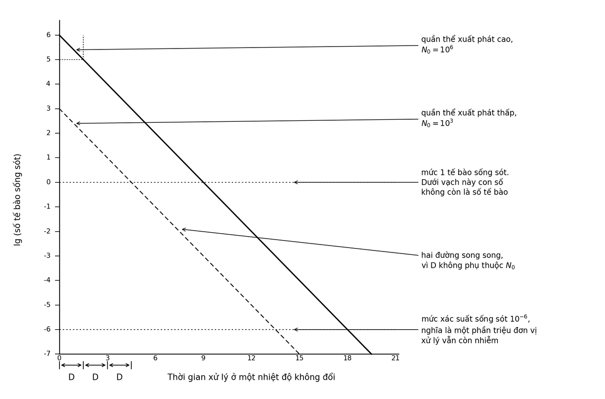

Kiểm soát vi sinh vật và đọc mức giảm
Slide 4 · Mục tiêu kiểm soát, tác nhân và bằng chứng · 8 trắc nghiệm và 1 tự luận
Bắt đầu học ↓Học buổi rút gọn · đọc hình và làm 10 câu · Học trọn chương và làm bộ 80 trắc nghiệm, 15 tự luận
Sau buổi này
- Phân biệt tiệt trùng, khử trùng, thanh trùng và ức chế sinh trưởng.
- Tính mức giảm log₁₀ từ dữ liệu giả lập.
- Đọc giới hạn phát hiện và giải thích vai trò nền mẫu.
Gợi nhớ · 5 phút
Nếu CFU giảm từ 10⁵ xuống 10³, số CFU giảm theo hệ số nào? Nêu khác biệt giữa mật độ thấp và bằng chứng tiệt trùng.
Đọc hình và nắm kiến thức · 20 phút
Quan sát hình minh họa

Hình mô hình của sổ tay. Hai độ cao ban đầu khác nhau và hai đường song song, giúp đọc riêng mức giảm log và lượng còn lại.
Quan sát · Nhìn hai điểm cắt trục đứng rồi so độ dốc của đường liền và đường đứt.
Dự đoán · Sau cùng một khoảng quan sát, hai quần thể giảm cùng số log có nhất thiết còn cùng số đơn vị sống không?
Mở giải thích sau khi dự đoán
Hai đường song song giảm cùng số log trong cùng khoảng, nhưng đường bắt đầu cao vẫn nằm trên. Muốn đọc lượng còn lại cần cả điểm xuất phát và mức giảm.
| Thuật ngữ | Mục tiêu | Ví dụ ở mức khái niệm |
|---|---|---|
| Tiệt trùng | Loại bỏ mọi dạng sống vi sinh | Dụng cụ cần vô trùng |
| Khử trùng | Kiểm soát vi sinh vật trên vật vô tri | Bề mặt làm việc |
| Thanh trùng | Giảm vi sinh vật tới mức mục tiêu | Sản phẩm thực phẩm phù hợp |
| Ức chế | Làm chậm tăng số lượng | Bảo quản lạnh |
Xác định đối tượng và mức tác dụng để chọn thuật ngữ.
- Mức đầu
Ghi N đầu và đơn vị.
- Mức sau
Ghi N sau hoặc giới hạn phát hiện.
- So sánh
Tính giảm log và xem lại các điều kiện đối chứng.
Kết luận dựa trên điều đo được và mức độ tin cậy.
Đọc hình để tự rút ra cơ chế
Quan sát · Một báo cáo mô phỏng ghi số đo cuối bằng một phần một trăm số đo đầu.
Dự đoán · Tự tính mức giảm log, rồi xác định có thể suy ra điều gì về số còn lại.
Mở giải thích sau khi dự đoán
Tỷ lệ đầu/cuối là 100 nên mức giảm là 2 log. Số đo còn lại bằng 1% ban đầu trong phép đo. Mức giảm và kết luận vô trùng là hai nhận định cần căn cứ khác nhau.
Mục tiêu kiểm soát
Tiệt trùng hướng đến loại bỏ mọi dạng vi sinh vật sống, kể cả nội bào tử vi khuẩn. Khử trùng áp dụng cho vật vô tri và mức tác dụng phụ thuộc biện pháp. Thanh trùng hướng tới mức giảm mục tiêu nhằm tăng an toàn hoặc ổn định sản phẩm. Điều kiện lạnh có thể làm chậm sinh trưởng của nhiều vi sinh vật.
Cơ chế chung
Các tác nhân có thể tác động vào màng, protein hoặc acid nucleic. Lọc minh họa cơ chế loại bỏ vật lý. Cùng một biện pháp có thể tạo kết quả khác nhau tùy đặc điểm vi sinh vật, số lượng ban đầu và nền mẫu.
Mức giảm log
Mức giảm log₁₀ = log₁₀(N đầu/N sau). Giảm 1 log là giảm còn 1/10, 2 log còn 1/100. Diễn giải dùng cùng đơn vị và ghi giới hạn phát hiện của phép đo.
Số liệu và quyết định
Báo cáo dưới ngưỡng phát hiện giới hạn độ chắc chắn của kết quả. Xác nhận mục tiêu kiểm soát cần dữ kiện phù hợp mục tiêu, phép đối chứng và tiêu chí đánh giá độc lập.
Liên hệ thực tế
Trong tài liệu kiểm soát chất lượng, cụm từ “dưới ngưỡng phát hiện” nên đi kèm ngưỡng của phép thử. Khả năng phát hiện quyết định độ mạnh của kết luận.
Tự kiểm · 25 phút
Hồ sơ kiểm soát chất lượng giả lập
Hai nền mẫu thực phẩm giả định X và Y được so sánh với cùng biện pháp U. Các số liệu được tạo để luyện đọc báo cáo. Mẫu Z là một phép đo riêng, cùng mật độ đầu và có ngưỡng phát hiện 10 CFU/mL.
| Mẫu | Mật độ đầu (CFU/mL) | Mật độ sau (CFU/mL) | Ghi chú |
|---|---|---|---|
| X | 10⁶ | 10⁴ | Nền ít protein |
| Y | 10⁶ | 10⁵ | Nền nhiều protein |
| Z | 10⁶ | <10 | Dưới ngưỡng phát hiện |
Đối chiếu và hẹn ôn · 10 phút
Chọn một chỗ còn phân vân. Giải thích lại bằng lời của mình rồi thử một câu cùng dạng.
Mở đáp án và giải thích · VSV-03
Xem trong bộ bài tập của chủ đề
Học tiếp theo slide